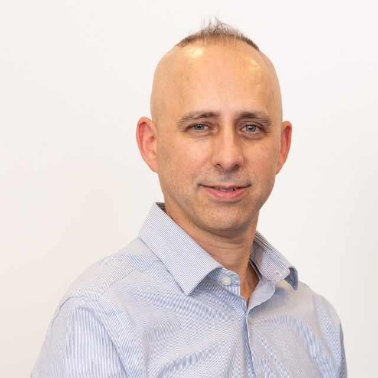
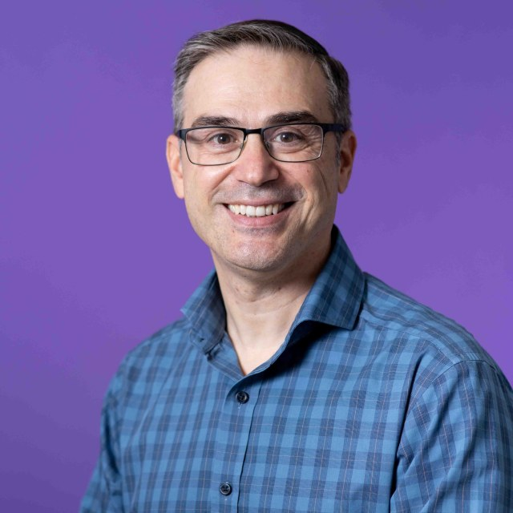
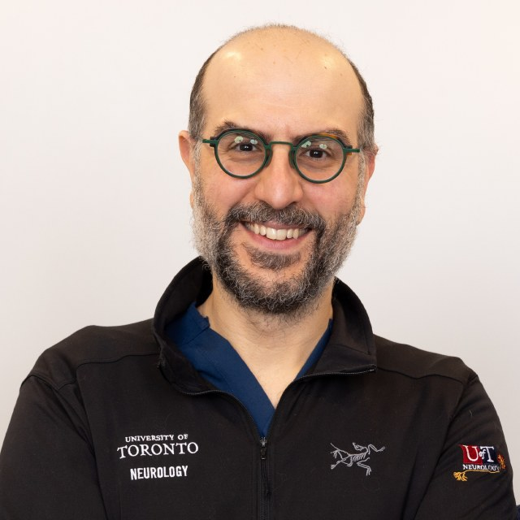

Myositis care works best when the right specialists share one plan. The Centre brings together rheumatology, rehabilitation, and neurology, supported by advanced-practice physiotherapists, nursing, and rehabilitation partners.

Dr. Vinik is a rheumatologist at St. Michael's Hospital and an assistant professor at the University of Toronto. He has a special focus on inflammatory muscle disease and leads the Centre's myositis clinic. Much of his work is about making expert myositis care easier to reach, closer to home.

Angelo is an advanced-practice physiotherapist who has worked at St. Michael's since 1998. He built the Centre's standardised assessments and rehabilitation pathways, and helped set up its rapid-access arthritis clinics. He co-founded RheumAcademy, Canada's rheumatology education platform for allied health.
RheumAcademy ↗
Dr. Kassardjian is a neurologist at St. Michael's who specialises in nerve and muscle disease and in nerve-conduction and EMG testing. He trained at the Mayo Clinic and provides the Centre's neuromuscular diagnosis through a dedicated pathway. He is an award-winning teacher and a leader in quality improvement.
Alongside the clinical leads, you may work with the Centre's ACPAC-trained advanced-practice physiotherapists, who carry out detailed strength and function assessments and guide rehabilitation, and with clinic nursing for treatment and coordination. Inpatient and outpatient rehabilitation is supported by our partners at Providence Healthcare.
When myositis reaches beyond muscle, the Centre uses direct pathways to dermatology, respirology, and other services, so skin, lung, and other organ involvement is managed without a fresh round of referrals. You can read more about how the clinic works on the approach page.